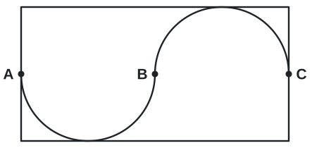

עמית ואורי יצאו, באותו הזמן, לריצה מהנקודה A. עמית רץ לאורך חצאי המעגל, מהנקודה A אל הנקודה C וחזרה לנקודה A. אורי רץ מהנקודה A לאורך היקפו של המלבן עד להשלמת סיבוב שלם וחזרה לנקודה A.
בהנחה שמהירויותיהם של עמית ואורי שוות, מי מהם סיים ראשון את ריצתו?

הצגת הפתרון
התשובה הסופית2תשובה (2)אורי
דרך הפתרון והסבר
נסמן את קוטר כל חצי מעגל ב־d.המלבן: A, B ו־C על הקו האמצעי, ושני חצאי המעגל צמודים זה לזה.אורך המלבן: AC = 2d. גובהו: d (חצי מעגל למטה ברדיוס d2 וחצי מעגל למעלה ברדיוס d2).המסלול של עמית: מ־A ל־C על שני חצאי המעגל, וחזרה באותה דרך.אורך חצי מעגל: πd2. שניים: πd.הלוך ושוב: 2πd ≈ 6.28dהמסלול של אורי: היקף המלבן.2 · (2d + d) = 6d6d < 6.28d, ולכן אורי עבר מרחק קצר יותר.באותה מהירות, אורי סיים ראשון.
💡 הלקח
היקף חצאי מעגלים מול היקף מלבן – π ≈ 3.14 לעומת 3: מי שמשתמש ב־π עובר יותר.
🔁 דפוס חוזר: מעגלים חסומים ומשיקים מבטאים הכול ברדיוס; רדיוס לנקודת השקה ניצב למשיק.
בסרטוט שלפניכם 9 מעגלים זהים החסומים בתוך ריבוע. אורכו של הקו המודגש הוא 8√2 ס"מ.
לאור נתונים אלו והנתונים שבסרטוט, מהו שטחו של הריבוע (בסמ"ר)?
הצגת הפתרון
התשובה הסופית3תשובה (3)144
דרך הפתרון והסבר
נסמן את קוטר כל מעגל ב־d. בכל שורה שלושה מעגלים צמודים, ולכן צלע הריבוע 3d.המרחק בין מרכזים של שני מעגלים סמוכים הוא d.הקו המודגש מחבר את מרכז המעגל השמאלי־עליון למרכז המעגל הימני־תחתון:הוא זז 2d ימינה ו־2d למטה – זה אלכסון של ריבוע שצלעו 2d.אורכו 2d · √2.נתון שאורכו 8√2:2d√2 = 8√2 ⇒ d = 4צלע הריבוע:3d = 12שטח הריבוע:12² = 144 סמ"ר
💡 הלקח
קו בין מרכזי מעגלים במבנה ריבועי הוא אלכסון של ריבוע – מבטאים בקוטר.
🔁 דפוס חוזר: תנועה דרך = מהירות × זמן; זה לקראת זה – סכום המהירויות; באותו כיוון – הפרש.
מוקשים נפוצים
הקו מחבר מרכזי מעגלים, לא פינות של הריבוע – לכן הוא אלכסון של ריבוע 2d ולא 3d.
בסרטוט שלפניכם משולש שווה צלעות ABC שאורך צלעו a. כמו כן, בסרטוט שני מעגלים חופפים – האחד שמרכזו A והשני שמרכזו מונח על הצלע BC.
לאור נתונים אלו ונתוני הסרטוט, מה גודלו של השטח הלבן בסרטוט?
הצגת הפתרון
התשובה הסופית1תשובה (1)πa²3
דרך הפתרון והסבר
שני המעגלים חופפים. המעגל שמרכזו על BC עובר ב־B וב־C, ולכן BC הוא הקוטר שלו:הרדיוס של שני המעגלים: a2.שטח כל מעגל: π(a2)² = πa²4.המעגל שמרכזו A:החלק שבתוך המשולש הוא גזרה של 60° (הזווית ב־A במשולש שווה צלעות).הגזרה היא 60360 = 16 מהמעגל, ולכן החלק הלבן הוא 56 ממנו:56 · πa²4 = 5πa²24המעגל על BC:החלק הלבן הוא חצי המעגל שמתחת ל־BC:12 · πa²4 = πa²8 = 3πa²24השטח הלבן כולו:5πa²24 + 3πa²24 =8πa²24 =πa²3
💡 הלקח
שטח בין מעגלים ומשולש – מחסרים רק את הגזרה שבתוך המשולש (60° = שישית מעגל).
🔁 דפוס חוזר: משולשים מיוחדים שווה צלעות: גובה s√3/2. 30-60-90: ניצב מול 30° = חצי היתר.
מה היחס בין שטח משולש שווה צלעות לשטח מעגל החסום בו?
הצגת הפתרון
התשובה הסופית3תשובה (3)3√3 : π
דרך הפתרון והסבר
נסמן את צלע המשולש s ואת רדיוס המעגל החסום r.במשולש שווה צלעות מרכז המעגל החסום הוא גם נקודת מפגש התיכונים, והוא מחלק כל גובה ביחס 2:1.הגובה: h = √32s, והרדיוס הוא שליש ממנו: r = h3 = √3s6 = s2√3.לכן s = 2√3 · r.שטח המשולש:√34s² =√34 · (2√3r)² =√34 · 12r² =3√3r²שטח המעגל: πr².היחס:3√3r² : πr² = 3√3 : π
💡 הלקח
במשולש שווה צלעות רדיוס המעגל החסום הוא שליש מהגובה: r = s√3/6.
🔁 דפוס חוזר: משולשים מיוחדים שווה צלעות: גובה s√3/2. 30-60-90: ניצב מול 30° = חצי היתר.
🔁 דפוס חוזר: מעגלים חסומים ומשיקים מבטאים הכול ברדיוס; רדיוס לנקודת השקה ניצב למשיק.
בסרטוט שלפניכם ABCD מלבן. בתוך המלבן חסומים שלושה מעגלים חופפים שרדיוסם r ס"מ. המעגלים משיקים זה לזה ומשיקים למלבן.
לפי נתונים אלו והנתונים שבסרטוט, מה שטחו של המלבן ABCD (בסמ"ר)?
הצגת הפתרון
התשובה הסופית3תשובה (3)r²(6 + 10√3)
דרך הפתרון והסבר
שלושת המעגלים מונחים זה מעל זה, צמודים לצלע AD ומשיקים לצלעות העליונה והתחתונה.AD = 3 קטרים = 6r.מרכז המעגל התחתון: במרחק r מ־AD ובמרחק r מ־DC.המרחק האנכי בינו לבין הצלע AB: 6r − r = 5r.נסמן את רוחב המלבן AB = w. המרחק האופקי מ־B למרכז: w − r.הקטע מ־B למרכז יוצר זווית של 60° עם AB. במשולש ישר הזווית שנוצר:הניצב שמול הזווית (האנכי) חלקי הניצב שלידה (האופקי) הוא tan 60° = √3:√3 = 5rw − rw − r = 5r√3 ⇒ w = r + 5r√3שטח המלבן:6r · (r + 5r√3) =6r² + 30r²√3 =6r² + 10√3r²(כי 30√3 = 30√33 = 10√3.)התשובה: r²(6 + 10√3).
💡 הלקח
מעגלים משיקים בתוך מלבן – כל המידות בכפולות של r; מרכז במרחק r מכל צלע שהוא משיק לה.
🔁 דפוס חוזר: תנועה דרך = מהירות × זמן; זה לקראת זה – סכום המהירויות; באותו כיוון – הפרש.
🔁 דפוס חוזר: מעגלים חסומים ומשיקים מבטאים הכול ברדיוס; רדיוס לנקודת השקה ניצב למשיק.
מוקשים נפוצים
המרחק האנכי הוא 5r (לא 6r): המרכז נמצא r מעל הצלע התחתונה.
בסרטוט שלפניכם משולש שווה צלעות ACD ושני מעגלים חופפים, שמרכזם ב־B ו־D ורדיוסם r.
על פי נתונים אלו ונתוני הסרטוט, מה גודלו של השטח האפור?
הצגת הפתרון
התשובה הסופית1תשובה (1)r²(4√3 − ⅔π)
דרך הפתרון והסבר
BD הוא הגובה של המשולש: מ־D לאמצע הצלע AC. המעגלים משיקים זה לזה על BD:BD = r + r = 2rצלע המשולש s: במשולש שווה צלעות הגובה הוא √32s:√32s = 2r ⇒ s = 4r√3שטח המשולש:12 · s · BD =12 · 4r√3 · 2r =4r²√3החלקים הלבנים בתוך המשולש:מהמעגל שמרכזו B: חצי המעגל שמתחת ל־AC (המעגל משיק לצלעות AD ו־CD, ולכן החצי הזה כולו בתוך המשולש): πr²2.מהמעגל שמרכזו D: גזרה של 60° (הזווית של המשולש ב־D): 16πr².יחד: πr²2 + πr²6 = 2πr²3השטח האפור:4r²√3 − 2πr²3 = r²(4√3 − 23π)
💡 הלקח
שטח בתוך משולש ממעגלים – מכל מעגל נכנס רק החלק שבתוך הזווית שלו (חצי מעגל / גזרת 60°).
🔁 דפוס חוזר: משולשים מיוחדים שווה צלעות: גובה s√3/2. 30-60-90: ניצב מול 30° = חצי היתר.
ממעגל שרדיוסו 2 ס"מ נחתכו 2 חתיכות כך שנוצרה הצורה הבאה.
לפי נתון זה והנתונים שבסרטוט, מה שטח הצורה שנוצרה (בסמ"ר)?
הצגת הפתרון
התשובה הסופית3תשובה (3)2⅔π + 2√3
דרך הפתרון והסבר
שטח המעגל המלא: π · 2² = 4π.נחשב את השטח של חתיכה אחת שנחתכה (קטע מעגל).המיתר באורך 2 ושני הרדיוסים לקצותיו (גם הם 2) יוצרים משולש שווה צלעות:הזווית המרכזית 60°.שטח הגזרה של 60°:60360 · 4π = 2π3שטח המשולש שווה הצלעות שצלעו 2:√34 · 2² = √3קטע המעגל = גזרה פחות משולש:2π3 − √3נחתכו שתי חתיכות כאלה:2(2π3 − √3) = 4π3 − 2√3השטח שנשאר:4π − 4π3 + 2√3 =8π3 + 2√3 =223π + 2√3
💡 הלקח
שטח קטע מעגל = גזרה − משולש. כשמחסרים קטעים, המשולשים חוזרים בפלוס.
🔁 דפוס חוזר: כפולה משותפת קטנה מתחלק בשני מספרים ⇔ מתחלק ב־LCM שלהם; אירועים חוזרים נפגשים ב־LCM.
בסרטוט שלפניכם טרפז ABCD (AB ∥ CD) בו מעגל. הנקודות E ו־F הן נקודות ההשקה של המעגל לצלעות הטרפז.
על פי נתונים אלו והנתונים שבסרטוט, EFקוטר המעגל = ?
הצגת הפתרון
התשובה הסופית3תשובה (3)קטן מ־1
דרך הפתרון והסבר
E ו־F הן נקודות ההשקה של המעגל לצלעות AD ו־BC. EF הוא מיתר במעגל.מיתר שווה לקוטר רק אם הוא עובר במרכז.הרדיוס לנקודת השקה מאונך למשיק. EF עובר במרכז רק אם שני הרדיוסים, לנקודות E ו־F, על ישר אחד – כלומר רק אם AD ∥ BC.בטרפז הנתון הצלעות המקבילות הן AB ו־CD, ולכן AD ו־BC אינן מקבילות.לכן EF לא עובר במרכז, והוא קצר מהקוטר:לכן היחס בין EF לקוטר קטן מ־1.
💡 הלקח
מיתר שווה לקוטר רק אם הוא עובר במרכז.
🔁 דפוס חוזר: מעגלים חסומים ומשיקים מבטאים הכול ברדיוס; רדיוס לנקודת השקה ניצב למשיק.
בסרטוט שלפניכם מעגל שמרכזו O ורדיוסו 6. A ו־D נקודות על היקף המעגל. OBC הוא משולש שווה צלעות. נתון: השטח הכהה שווה לשטח הצורה שקודקודיה הם D, C, B ו־A.
על פי נתונים אלו ונתוני הסרטוט, BC = ?
הצגת הפתרון
התשובה הסופית3תשובה (3)12√π⁴√3
דרך הפתרון והסבר
OBC שווה צלעות, ולכן ∢BOC = 60°. הקטעים OA ו־OD הם רדיוסים (6), ו־A, D על OB ו־OC.השטח הכהה – החלק של המעגל שמחוץ למשולש: גזרה של 360° − 60° = 300°.300360 · π · 6² =56 · 36π =30πהצורה ABCD – המשולש OBC פחות הגזרה OAD (גזרה של 60°):גזרת 60°: 16 · 36π = 6πשטח ABCD = √34 · BC² − 6πנתון שהשטחים שווים:√34 · BC² − 6π = 30π√34 · BC² = 36πBC² = 144π√3BC = 12√π⁴√3(השורש של √3 הוא ⁴√3.)
💡 הלקח
שטח כהה = מעגל פחות גזרה; הצורה = משולש פחות גזרה – משווים.